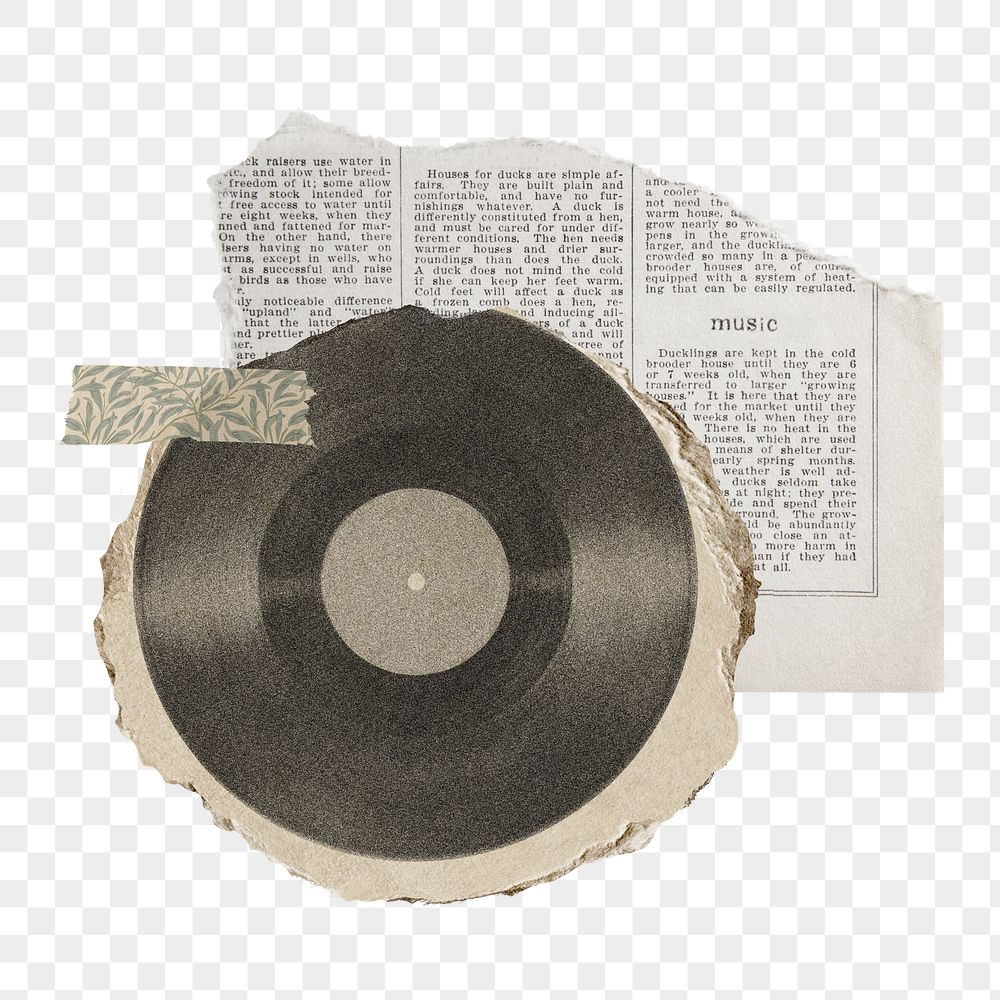

Music was a big part of my upbringing. I remeber times when my sister would be cleaning while blasting Beyonce in the background, or going on long drives with my uncles while Oliver Mtukudzi was playing. Or the tines where my friends and i would do rap battles in the middle of the street. You see i was raised around a variety of music, so naturally i listen to a variety of music. Music is now how I share myeself, feel free to share this piece of me.
I offer a wide range of music. All show a different side of me, and each have a significance in my life. The music I listen to resonates with how it makes me feel, whether it is nolstagia from my childhood, or the things i have experienced in life. Check out which playlist resonates with you the most
